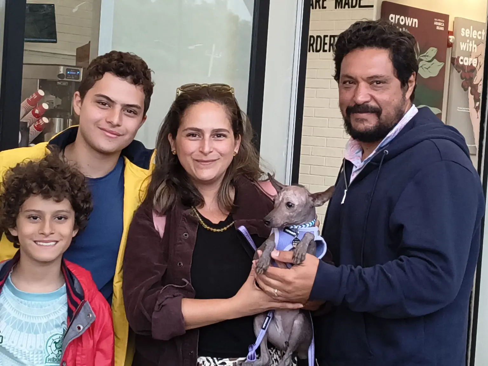

El jueves 13 de agosto de 2026, Teyolia Ramírez fue entregada a Graziella A. F. Domino Lovelace y su familia en el Tim Hortons de Plaza Encuentro Fortuna, en Lindavista, Ciudad de México. La fotografía de este encuentro conserva el momento en que una etapa de crianza y preparación dio paso a una vida compartida.
Teyolia es una xoloitzcuintle hembra miniatura de Xolos Ramírez. Su destino final será República Dominicana; por eso, la reunión en CDMX representa tanto una entrega familiar como el inicio de una transición que continuará con los cuidados y trámites requeridos antes del viaje internacional.
Una nueva etapa para Teyolia
Cada entrega forma parte del linaje vivo del xoloitzcuintle: no solo cambia el hogar de un ejemplar, también comienza una relación cotidiana en la que su identidad, sus cuidados y su historia pasan a ser acompañados por una nueva familia.
Ejemplar:
Teyolia Ramírez
Raza y talla:
Xoloitzcuintle miniatura
Fecha:
13 de agosto de 2026
Lugar:
Plaza Encuentro Fortuna, CDMX
Familia:
Graziella Domino y familia
Destino final:
República Dominicana
Durante el encuentro se realizó la entrega física de Teyolia, se compartió su documentación base y se revisaron los elementos preparados para acompañar sus primeros días con la familia. El centro de todo el proceso siguió siendo Teyolia como animal vivo: su adaptación, su seguridad y el vínculo que comenzaba a construirse.
Preparación antes de la entrega
Antes del encuentro, Teyolia recibió una preparación básica solicitada por Graziella. El objetivo no fue presentar un entrenamiento concluido, sino darle referencias iniciales para desenvolverse con mayor claridad en situaciones cotidianas.
- Manejo con correa para comenzar recorridos acompañados.
- Convivencia en calle y espacios exteriores como parte de su socialización inicial.
- Comando “stay” o “quieta” como primera pauta de autocontrol y comunicación con la familia.
Estas prácticas quedaron documentadas como parte de su preparación previa. Su continuidad dependerá de rutinas consistentes, refuerzo amable y del tiempo que Teyolia necesite para conocer su nuevo entorno.
Documentación y cuidado
La entrega incluyó la documentación base de Teyolia y la revisión del Kit Bienestar Xoloitzcuintle, preparado para acompañar su transición. Cada elemento cumple una función distinta: orientar los cuidados inmediatos, mantener organizada su información y ayudar a la familia a seguir su proceso.
El certificado de perro de servicio ya había sido recibido y compartido previamente con Graziella. Este artículo deja constancia de ese antecedente sin afirmar que el documento se hubiera entregado físicamente durante la reunión.
El viaje todavía tiene pasos propios. Antes del vuelo a República Dominicana corresponde completar, dentro de las ventanas aplicables, la ruta veterinaria y zoosanitaria: certificado de salud, desparasitación interna y externa y el trámite correspondiente ante SENASICA.
Estos pasos se presentan como preparación pendiente o prevista para el viaje, no como procedimientos concluidos durante la entrega del 13 de agosto.
Actualización familiar · 15 de agosto de 2026
Teyolia con su pecherita oaxaqueña
Después de la entrega, Graziella compartió una nueva fotografía de Teyolia usando su pecherita oaxaqueña. La imagen forma parte de la continuidad de su historia: ya no solo como ejemplar entregado, sino como xoloitzcuintle acompañada por su nueva familia, con sus primeros objetos, rutinas y recuerdos propios.
Este tipo de actualización conserva el vínculo entre la crianza documentada y la vida cotidiana posterior. Para Xolos Ramírez, la historia de cada xolo no termina en la entrega; continúa en los cuidados, las fotografías y los pequeños momentos que su familia decide compartir.

NFT de linaje y custodia digital
Teyolia ya contaba con el NFT raíz “Teyolía Ramírez — Primer Aliento”, identificado con el ticker XOLOSNFT. Durante la entrega, este NFT fue transferido a la Tonalli Wallet de Graziella, de modo que la familia recibió también la custodia de esa referencia digital.
NFT raíz · Primer Aliento
Ticker: XOLOSNFT
TXID / token visible:
c2ae3a1035134b93994dbbb01715e90424799a3c26760f234b97430c1ce162a2
Transferencia a la Tonalli Wallet familiar
TX de envío del NFT:
e9fbb5580227bf6813cb260f8b540006a6be72e7109df0e6cce72a62cd83c738
Segundo NFT documental · Entrega, pedigrí y viaje
Este registro complementa el NFT raíz y relaciona la entrega de Teyolia, su pedigrí, el certificado de perro de servicio recibido y compartido previamente, la preparación inicial documentada y la ruta de viaje a República Dominicana.
TXID / registro documental:
0a8e13e4a2ad49933fabe6546aad2c87e299365e6c2ec43dccc53a452c661713
El NFT de Linaje Xoloitzcuintle funciona aquí como una capa complementaria de identidad, memoria y trazabilidad digital. Permite verificar la emisión del registro y su transferencia entre wallets.
El NFT raíz conserva la referencia de “Primer Aliento”; el segundo NFT amplía el expediente documental de la entrega y el viaje, sin sustituir esa identidad raíz.
No sustituye el pedigree, el microchip, la revisión veterinaria ni los documentos sanitarios; tampoco demuestra por sí solo pureza genética o propiedad legal del perro. Su función es acompañar y relacionar un expediente que comienza siempre en el ejemplar físico y en su documentación.
La cadena conserva una referencia verificable y resistente a modificaciones silenciosas, pero la disponibilidad de los archivos relacionados también depende del mantenimiento de la infraestructura que los aloja. Por eso, la memoria digital se entiende como un complemento responsable, no como una promesa de permanencia absoluta.
Un linaje que continúa en familia
Agradecemos a Graziella y a su familia la confianza depositada en Xolos Ramírez. Teyolia inicia esta nueva etapa acompañada por una preparación inicial, documentación organizada y una referencia digital que la familia podrá custodiar y consultar.
Su camino continuará hacia República Dominicana, pero la historia que importa ya comenzó: la de una xoloitzcuintle viva, reconocida por su nombre y recibida por una familia dispuesta a construir con ella nuevos recuerdos.
Seguir el recorrido de Xolos Ramírez
Conoce otros artículos del Archivo del Linaje Vivo o visita a los ejemplares actualmente presentados por Xolos Ramírez.